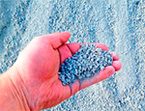

Продажа инертных материалов

Отсев
Отсев
Отсев
Отсев
Отсев
Ищете, где купить песок, отсев, ПГС или щебень в Барнауле?
- Щебень фракции: цена указана с учетом доставки в черте города (рублей/тонна)
- 40-70: 890 рублей/тонна
- 5-20: 830 рублей/тонна
- 0-40: 870 рублей/тонна
- Песок речной: 300 рублей/тонна
- Отсев: 850 рублей/тонна
- ПГС (песчано-гравийная смесь): 780 рублей/тонна
- Чернозем: 350 рублей/тонна
- Глина: 300 рублей/тонна
ВИДЫ ИНЕРТНЫХ МАТЕРИАЛОВ И ИХ СВОЙСТВА
- Наиболее популярными разновидностями такой продукции являются следующие материалы: Карьерный и речной песок. Он используется для приготовления бетонных и цементных строительно-отделочных смесей, отсыпки песчаных подушек для фундаментов и дренажных каналов, применяется для облагораживания территорий и создания песочниц. Карьерная разновидность стоит дешевле, а речной песок отличается мелкозернистой структурой и чистым составом.
- Строительный щебень, который может отличаться по составу (известняковый, гравийный или гранитный) и фракции, т.е. размеру частиц. Это достаточно прочный материал, находящий применение в возведении зданий, технических сооружений, монтаже колодцев, устройстве дорожного покрытия.
- ПГС. Материал представляет собой смесь песка с гравием, которую используют для ландшафтных и строительных работ, в частности для приготовления бетонных смесей для заливки основания или иных монолитных конструкций.
- Отсев – это разновидность, которую получают из гранитного щебня, его поставляют россыпью или мешками на выбор клиента. Материал используют при изготовлении железобетонных изделий, декоративной плитки для мощения дорожек, стеновых отделочных каменных плит, также он подходит для засыпки швов между асфальтовыми и бетонными плитами.
- Чернозем. Он представляет собой обогащенную гумусом землю, которая отличается повышенной плодородностью и используется для выращивания плодово-овощных, злаковых культур, деревьев и кустарников. Материал нередко заказывают фермеры, чьи угодья находятся на территории с обедненной почвой, где выращивание полезных растений затруднено и требует регулярной подкормки.
ПОЧЕМУ СТОИТ ЗАКАЗАТЬ ИНЕРТНЫЕ МАТЕРИАЛЫ ИМЕННО У НАС?
Наша компания уже не первый год занимается поставками природных материалов в Барнауле и по области, используя собственную технику для добычи и обработки. У нас действует современный автопарк, с собственной спецтехникой и оборудованием, есть склады для хранения, поэтому большинство предлагаемой к продаже продукции находится в наличии. Мы сотрудничаем как с частными лицами, так и строительными бригадами, подрядчиками, крупными компаниями, которые специализируются на оказании строительных услуг. Преимущества сотрудничества с нами:- Возможность лично убедиться в качестве товаров.
- Вы можете заказать материалы как в малом количестве, так и большой объем, выбрать вид фасовки (например, щебень или гравий можно приобрести мешками или россыпью).
- У нас есть свой автотранспорт для доставки, и мы привезем нужный объем продукции, предварительно согласовав с вами день и время прибытия.
- Мы принимаем различные формы оплаты, а стоимость материалов в нашей компании сравнительно невысокая.
КАК СДЕЛАТЬ ЗАКАЗ НА НАШЕМ САЙТЕ?
Чтобы приобрести инертные материалы у нас, вам достаточно позвонить по одному из телефонов, посетить наш офис или оставить заявку на странице «Контакты», чтобы наш менеджер перезвонил вам. Сообщите, какой вид продукции вас интересует, какой объем вам необходим и когда вы сможете принять машину. После согласования деталей мы соберем заказ и отправим партию товара в удобное для вас время!